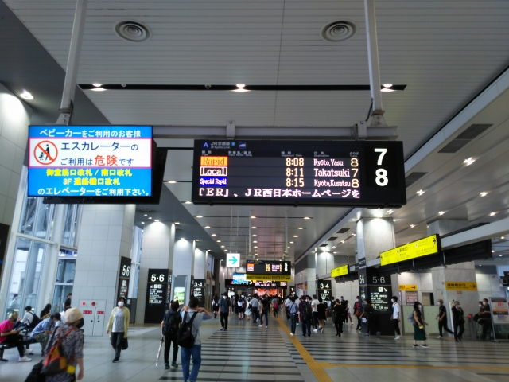

朝の大阪駅にやって来ました。
地下駅完成に向けて、新しい改札を作る工事も進ん
でますね。
新快速に乗り込みます。
京都に着いて、山陰線ホームへ。山陰線は、まだお
気に入りの２２１系の天下です。
京都からは園部行きに乗り込みます。山陰線に乗る
のは久しぶり。鉄道博物館の展示車両が車窓から見
えてテンション上がります。
園部で福知山行きに乗換。田舎のほうが新型車両と
いう不可解さ。意外と乗客が多く、２両編成の列車
は座れませんでした。
この車内で、初めてＩＣカードもチェックする車内
検札に遭遇しました。ＩＣカードを機械にかざして
チェックしてたけど、意味あんのかいな？
福知山に着くと、ザ・国鉄型の車両がお出迎え。こ
れに乗って和田山に向かいます。
和田山に到着。ザ・国鉄な景色ですね。
播但線は国鉄型が健在です（厳密には改造車なので
国鉄型ではありませんが）。
ホームのベンチで昼ごはんタイム。もちろん駅そば
や駅弁売りの姿などありません。３連休というのに
人の気配もなく、のんびりとしたいい感じです。
和田山からは久々の播但線です。
寺前に到着。
１０３系健在なり。
ちょうどはまかぜと交換の時間。
しかし播但線の１０３系も、長いなぁ。そろそろ玉
突きで２２１系でもやってくるんかな。
寺前からは久々の１０３系。姫路城が見えてきまし
た。
姫路で御座候を買って、新快速の車内でおやつタイ
ム。尼崎で乗り換えて、無事塚本到着。
ここまでで、１６０円でした。
って何してるって？播但線なんて、大阪近郊区間で
もないし・・・って、古い私は思ってましたが、な
んと、ＩＣ区間は大廻乗車ありなんですよ！！
塚本出場するときは時間超過のチェックがかかって
出れなかったですが、駅員に言ったらすんなり出し
てもらえました（キレてないっすよ）。
息子の情報のおかげで、これから雪見旅も格安で行
けそうです！